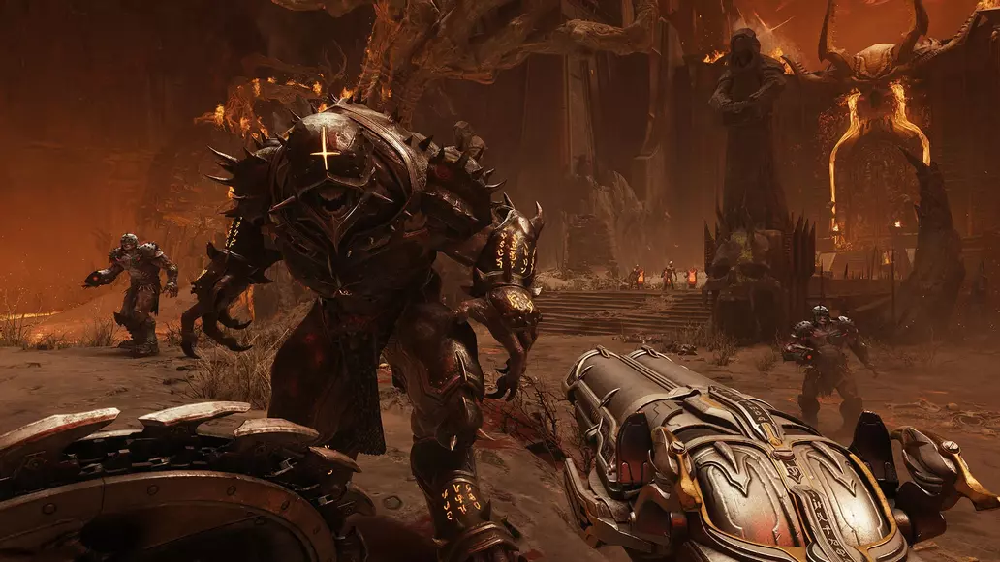
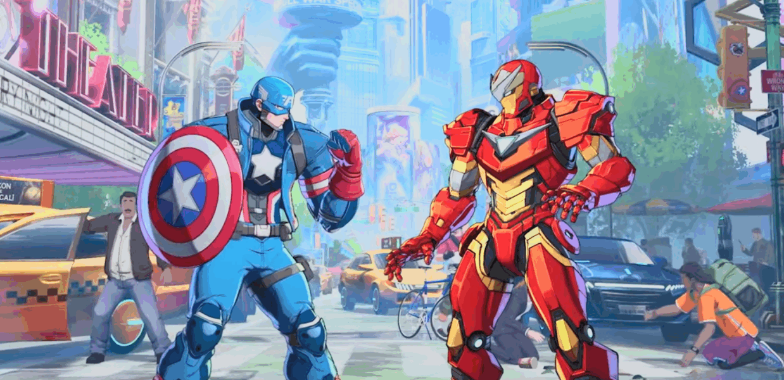

DOOM: The Dark Ages: Missões, Desafios e Segredos
Um guia completo com os segredos e locais de colecionáveis

Leia a matéria completaUm guia completo com os segredos e locais de colecionáveis

Leia a matéria completaNovo gameplay de 12 minutos se aprofunda no funcionamento do jogo.s

Leia a matéria completa